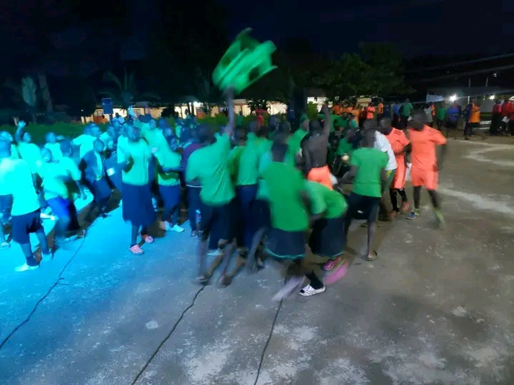

Welcome to qohms,
where we embrace
a holistic approach
to education
Welcome to qohms,
where we embrace a holistic approach to education
Queen of martyrs is a well organised environment that really comforts a student to study and to live as of his/her expectations following the adequate facilities necessary for excellence holistically
At our school celebrations are really. School celebration moments are the heartbeats of our educational community, embodying the spirit of unity and achievement. From jubilant sports victories
A school trip at Queen of Martyrs High School is not just a journey; it's an exhilarating adventure that enriches our education and creates memories that last a lifetime.
The establishment of the Grotto of Mother Mary within our school premises has significantly enriched the spiritual landscape of our learning environment. Serving as a serene sanctuary for contemplation and prayer, the Grotto has become a focal point for students seeking solace and connection to their faith.
Our school isn't just a place of education; it's a realm where young minds are transformed into confident, knowledgeable, and compassionate individuals. In the hallowed halls of Queen of Martyrs, the school lifestyle is a
Charity giving is not just a noble endeavor at Queen of Martyrs High; it's a core value that defines our school community where we teach the principles of generosity and compassion
Leadership isn't just a goal; it's a way of life. Our school doesn't merely teach about leadership; it cultivates it in every student. Within these walls, young women are encouraged to step into their power

Queen of Martyrs School, a beacon of Catholic education where faith and excellence unite. Our mission is to foster not only academic growth but also spiritual development under the guidance of our Catholic values. We embrace the rich traditions of the Catholic Church, instilling in our students a deep sense of faith, love, and compassion. At Queen of Martyrs, we are dedicated to nurturing a community where students grow in wisdom, grace, and moral integrity. Join us on this sacred journey where education is a divine path, and together, we'll empower your child to shine with both knowledge and the enduring light of faith."